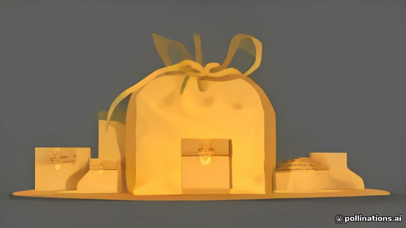

মাস্তুলের ১৪ বছর পূর্তিতে ফিলিস্তিনি শিক্ষার্থীদের জন্য ১০ লাখ টাকা সহায়তা
Prothom Alo · 2026-11-15
AI-generated illustrationমাস্তুল ১৪তম বার্ষিকীতে ফিলিস্তিনি শিক্ষার্থীদের ১০ লাখ টাকা সহায়তা প্রদান করে এবং রাজধানীর ২০টি স্থানে দৈনিক বিনামূল্যে খাবার বিতরণ চালিয়ে যাচ্ছে।
প্রথাম আলোর মতে, মাস্তুল তার ১৪ বছর পূর্তিতে ফিলিস্তিনি শিক্ষার্থীদের জন্য দশ লাখ টাকা সহায়তা প্রদান করেছে। এই তহবিলটি তার দাতব্য কাজের অংশ।
মাস্তুল মেহমানখানা প্রকল্পের মাধ্যমে রাজধানীর বিশটি স্থানে প্রতিদিন বিনা মূল্যে খাবার বিতরণ করা হয়। এছাড়া ‘জাকাত স্বাবলম্বী’ প্রকল্পের অধীনে দরিদ্র মানুষকে আত্মনির্ভরশীল হতে সহায়তা করা হয়।
Read the original reporting at the links above.
English version
Mastul marks 14 years with 1 million taka aid to Palestinian students
According to Prothom Alo, Mastul celebrated its 14th year by allocating ten lakh taka to support Palestinian students. The assistance is part of its broader charitable activities.
The organization also runs the Mastul Mehamankhana, which distributes free meals each day at twenty sites across the capital. Through its Zakat Swabalambi initiative, Mastul aims to help economically disadvantaged people become self‑reliant.